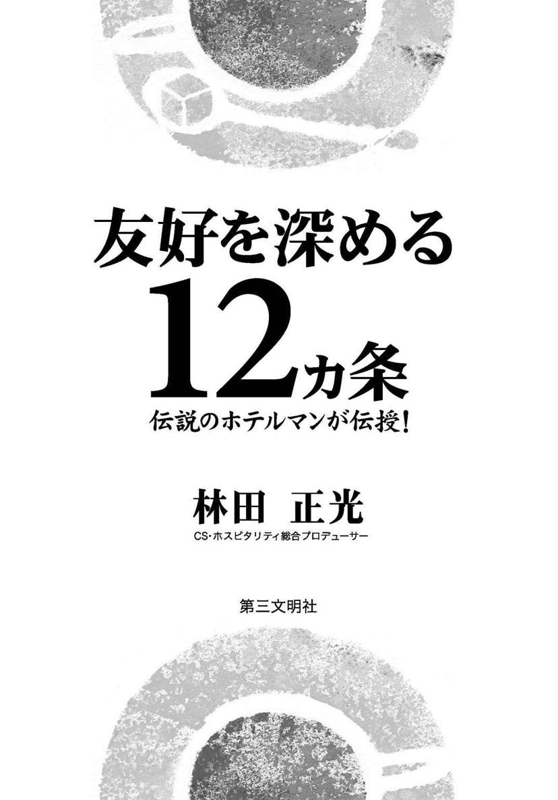
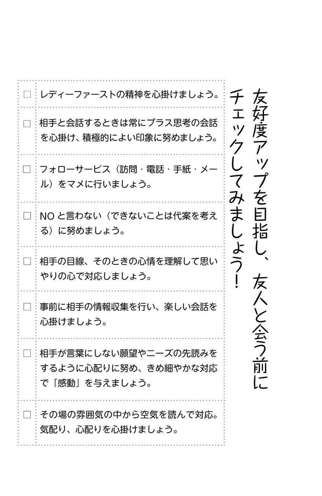
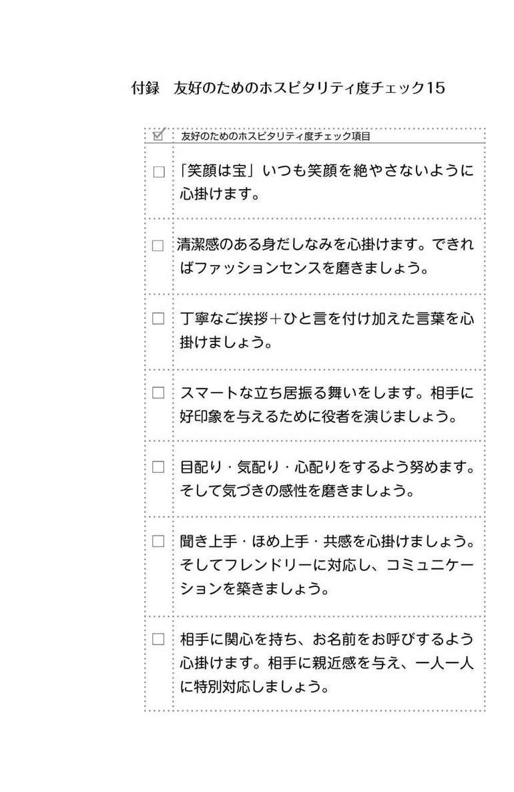
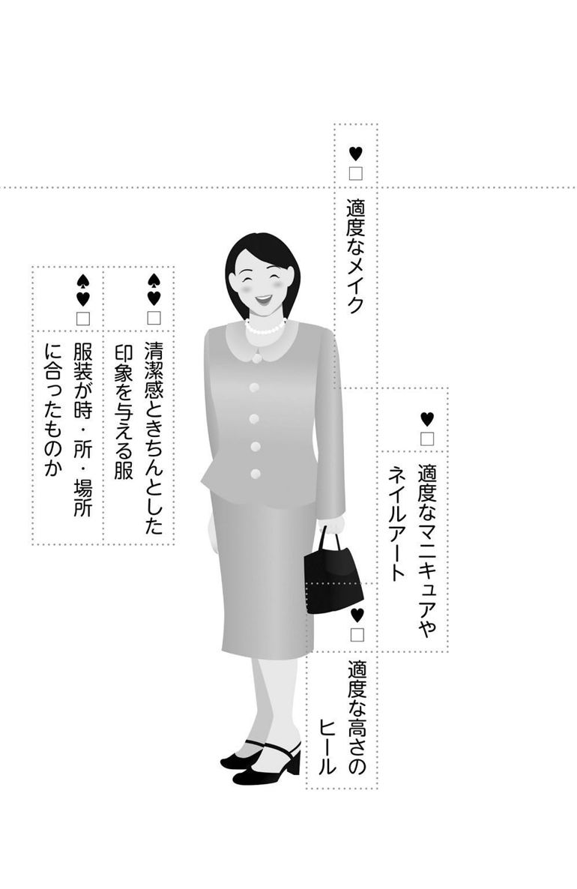
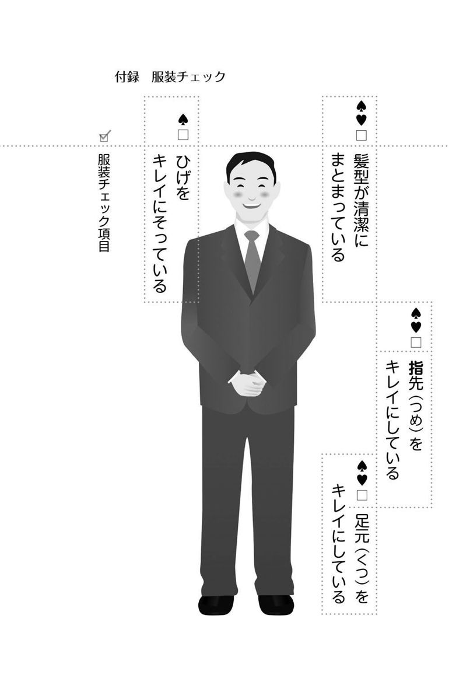
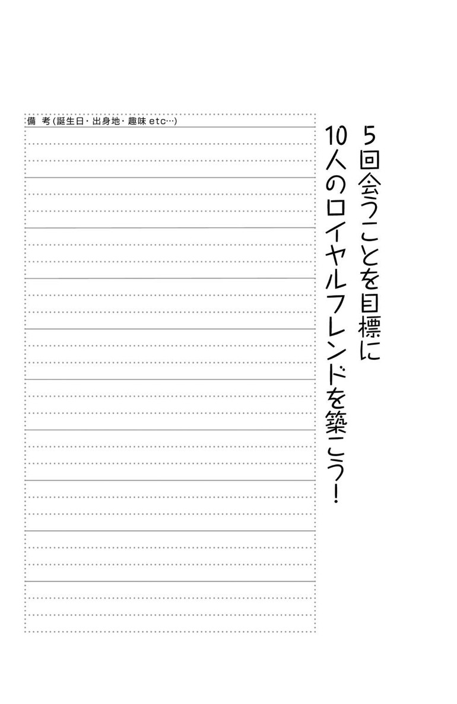
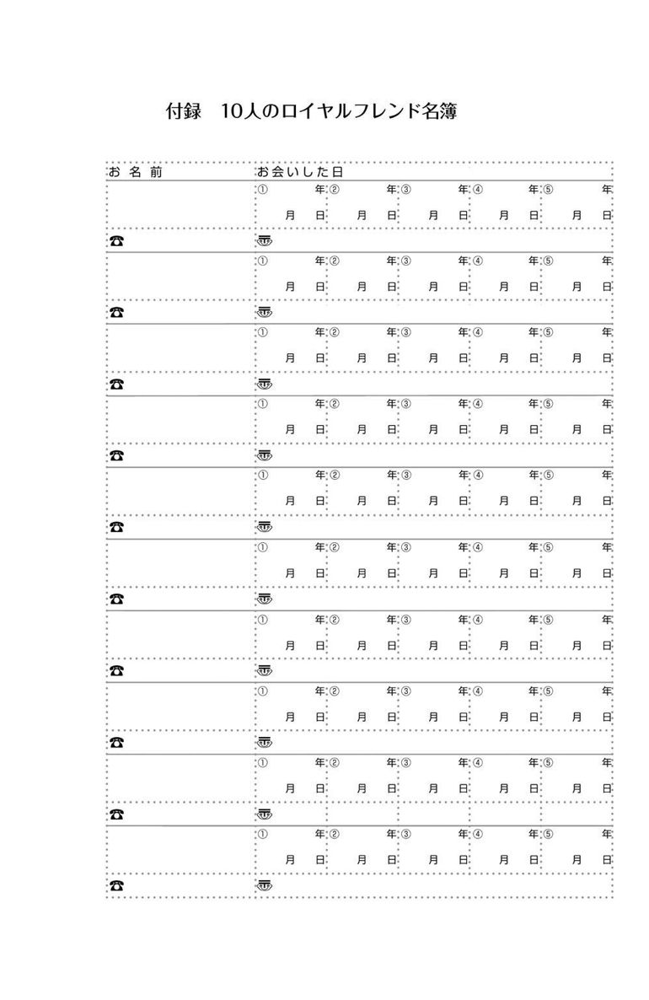

| 友好を深める12ヵ条 : 伝説のホテルマンが伝授！ | |
| 林田正光 | |
| (2011) | |

友好を深める12ヵ条
林田 正光
この電子書籍は、縦組の底本を元に作成しました。
私は、高校を卒業してからの約三十年間、藤田観光の太閤園という迎賓施設に勤めていました。太閤園は、関西財界の雄と呼ばれていた藤田伝三郎が築造した網島御殿をもとにした日本庭園の広がる美しい施設です。宿泊施設こそありませんが、「大阪の迎賓館」とも呼ばれ、関西政財界の催しものが数多く開催されています。
この施設で私は、サービスやおもてなしについて学びながら、仕事を発展させるために、ひたすら人脈を増やすことを考えてきました。その結果、多くの方とのつながりを持つことができ、退職するまでに三千名を超えるほどの人脈を持つことができました。
ところが、四十八歳になったある日、私は突然、大きな病気をわずらってしまったのです。生きるか死ぬかというような病気で、長く入院をせざるをえない状況となりました。
ありがたいことに、そのような私を励ましてくださる方々がいました。「ちょっと、近くまで来たので寄りました」と毎日のように来てくださる方もおりました。自分がつらい立場に置かれて初めて、本当のやさしさや温かさというものを知りました。
このような心温まる方がいらっしゃる一方、「お見舞いに来ていただいてもおかしくないだろうな」と思っていた方が、一度もお見舞いに来てくださらないということもありました。「これまで私のつくってきた人脈とは、いったい何だったのだろう」
私は深く考えさせられました。
多くのお客様、お取引先様とおつきあいをさせていただいていましたが、それはあくまでもビジネスのおつきあいに過ぎませんでした。私が仕事を離れてしまえば、終わってしまう程度のつながりだったのです。
私は太閤園で「心のこもったおもてなし」を学び実践してきたつもりでしたが、いつのまにか「心」の部分を忘れて、自分のビジネスのことばかりを考えていたのです。それ以来、私はこれまでの自分を反省し、「一生涯おつきあいできる人脈」をつくろうと心掛けることにしました。
ビジネスに偏っていた人脈づくりを根本から反省し、「お互いの人生を豊かにする人脈づくり」を始めようと、そのとき初めて気がついたのです。
その後私は、五十歳のときに、ザ・リッツ・カールトン大阪に採用していただくことができました。
世界のホテル界の頂点、ザ・リッツ・カールトン・ホテルは、「心のこもったおもてなし」を何よりも大切にしているホテルです。当時の私にとって、最も学ばなければいけない要素を持ったホテルでした。
ザ・リッツ・カールトン・ホテルでは、「心のこもったおもてなし」について繰り返し教育を受け、非常に多くのことを学ばせていただきました。自分のビジネスのことばかりを考えているよりも、誠意を尽くし、真心の交流を深めたほうが、結果的には人脈は広がっていくことも、実感としてよくわかりました。
ザ・リッツ・カールトン大阪での勤務は七年間という短い期間でしたが、その期間に千名ほどの新たな人脈ができ、今でもおつきあいをさせていただいている方がたくさんいらっしゃいます。「心のこもったおもてなし」は、決してホテルマンができる特別なものではありませんし、特殊な才能もいりません。その基本は「相手に満足していただく」という姿勢です。
本書では、長年ホテルマンとして経験し、また実践してまいりました人脈づくりや、友人・知人との友好を深めるコツを12カ条という形でご紹介してまいります。この12カ条を実践していただくことで、皆さまの交友関係がより広く、また深いものになりますことを著者として祈念してやみません。
２０１１年１月
ＣＳ・ホスピタリティ総合プロデューサー
林田正光
あなたには「友人」と呼べる人が何人くらいいますか？では、「真の友人」は──？
私はかつて、「大阪の迎賓館」と呼ばれた太閤園で販売促進支配人を務めていました。当時、私が築いていた人脈は優に三千人を超えていたでしょう。ところが、四十八歳で大病をわずらい、職場の第一線から退くと、私のもとから去っていった方が大勢いました。「私がつくってきた人脈とは、いったい何だったのだろう」
大きなショックの中で気づいたのは、ビジネス上の表面的なおつきあいではなく、「本当の人脈」「真の友人」をつくらなければならないということでした。
人脈づくりの基本。それは「相手に尽くす心」です。人脈をつくりたい。そう焦っていた若手時代、私は「自分にとってメリットのある人とつきあいたい」と思っていました。
しかし、それでは人脈は広がりません。
あるときから私は、「相手のお役に立ちたい」「相手に喜んでもらいたい」「心のこもったおつきあいをしたい」と思って人と接しはじめました。すると、不思議なほど周囲の人が応援してくださるようになったのです。
見返りを期待しない奉仕の精神。これが人脈づくりの第一のポイントです。
次に大切なことは、一度出会った人とは一生涯おつきあいする気持ちで人と接することです。私が病気になったとき、離れていく人がいる一方で、温かくしてくださった人もいました。そのときの感謝を忘れることはありません。
友好拡大への具体的な実践法はたくさんございますが、その前に心に刻んでほしいことがあります。それは「真の友人」はそう簡単につくれないという点です。
いくら相手にアプローチしても反応がないこともあります。嫌な対応をされる
こともあるでしょう。それでも、いつかは心を開いてくれると信じて、焦らず、マメに働きかける継続性を持ってください。
もちろん、「真の友人」は多いほうがいい。でも、一人でも、二人でもいいのです。もしも、十人の方と「本当の人脈」を築ければ、その人の人生はきっと満たされたものとなるはずです。
① 「相手のお役に立つ」が基本
② 一生涯おつきあいする気持ちで
③ 焦らずマメに継続する
私が五十七歳のときのことです。ある一流ホテルのオーナーと面談の機会を得ました。二時間ほどお話ししたころでしょうか。突然、オーナーから次のような提案をいただきました。「あなたが気に入りました。よろしければ、社長と総支配人を引き受けてもらえませんか」
驚きました。なぜ、私を気に入ってくださったのか。うかがってみると、オーナーは「最初の挨拶で決めました」と言うのです。
私はその後、ホテル経営者として貴重な経験をさせていただきましたが、そのきっかけは一言の挨拶だったのです。
挨拶で人生を拓くことができた私が、日ごろ実践している挨拶のポイントを紹介します。
挨拶の基本。それは、心をこめることです。心のこもった挨拶をするには、言葉の意味を意識して挨拶するのがもっとも簡単な方法です。たとえば、「ありがとう」という言葉は「有り難し」、つまり「滅多に起こりえない、有り難いこと」という言葉に由来します。
滅多にないほどのことを相手にしていただいたという感謝の気持ちを「ありがとう」にこめれば、その心は相手に伝わるはずです。
次に私が心がけていることは、相手のお名前をお呼びすることです。「○○さん、おはようございます」「○○さん、ありがとう」
名前を呼ぶことで、その人を大切にしている心が伝わります。これだけで、相手が受ける印象は大きく変わるでしょう。お見送りや別れる際の挨拶も大切です。別れ際こそ心をこめて挨拶してください。最後の最後まで心配りを続ける姿勢が、大切にされたという余韻を残し、次にまた会いたいと思っていただくことにつながるのです。
注意したいのは忙しいときや疲れているとき。どうしても挨拶が疎かになりがちですので、意識して丁寧な挨拶を心がけましょう。
いままで挨拶してこなかったのに、急に挨拶したら変に思われるんじゃないか。そんなふうに考える方がいるかもしれません。でも大丈夫です。挨拶をされて悪い気がする人はいませんから。
挨拶は難しいことではありません。その気になれば、いますぐ、誰にでもできるものです。心のこもった感じのいい挨拶で、友好を大いに広げていきましょう。
① 心をこめた挨拶が基本
② 相手の名前を呼ぶ
③ 別れ際こそ心をこめて挨拶
相手に喜ばれる挨拶の工夫として、相手のお名前をお呼びする方法を紹介しました。じつは、名前を呼びかけることは、身近な友人・知人との関係を良好にするだけでなく、普段あまり顔を合わせない人や、新たに知り合った人との友好関係を深めるきっかけにもなります。
たとえば、一度会っただけの人から名前を呼ばれたら、あなたはどう思うでしょう。「私の名前を覚えてくれていたんだ」と驚くとともに、うれしくなるのではないでしょうか。相手の名前を覚えることは努力を要することですが、その効果はとても大きいのです。
私は二十二歳で老舗のガーデンレストランのフロントマンになりましたが、そのころから、「お見えになられたお客様全員の顔とお名前を覚えよう」と目標を立てて挑戦してきました。
毎日、ノートにメモをとり、相手の方の特徴なども含めて記録しました。名前だけで覚えるのは難しいので、「シルバーのベンツでお越しになるのは○○様」「黒縁メガネをかけていらっしゃるのは△△様」など、頭の中に映像的なイメージがわくようにしました。
そして、時間を見つけては、そのノートを何度も読み返しました。のちに私は念願だった営業部門に配属されましたが、その理由は、「フロントマンとして顔が広いから」というものでした。お名前を覚える努力が、私の人生を開いてくれたのです。
営業に配属されてからは、さらにお名前を覚えることに力を注ぎました。名簿を作成し、名刺をいただけば、すぐに名簿に記録しました。名簿には大きめの備考欄を設け、その方の誕生日、出身地、趣味、好きな食べ物、さらにご家族の誕生日など、わかったことがあれば何でも記入しました。
次に相手に会う前には、その名簿を確認して、どのような方だったのか思い出してからお会いしました。相手の興味・好みに合わせておつきあいをすることで、多くの方とより深い絆を結べたと感じています。
友好拡大のコツは「相手に関心を持つ」こと。人間にとって、自分に関心を持ってもらうことは一番うれしいことです。名前を覚えることは、「あなたに関心を持っています」という心を伝える第一歩なのです。
① 名前と特徴などを名簿で整理
② 相手に会う前に名簿を確認
③ 相手の興味・好みに合わせる
サービス業の世界では、お客様に三回来ていただくことを目指してサービスをします。三回来ていただいたお客様は「リピーター」と考えてもよいからです。
さらに、五回ご利用いただければ「ロイヤル・カスタマー」になっていただける可能性が高いお客様だといえます。ロイヤル・カスタマーとはお店やホテルのファンになってくださり、今後ずっとおつきあいいただけるお客様です。
ホテル業界では、各スタッフがそれぞれ十人のロイヤル・カスタマーを持つことができれば、ホテルとして成立すると言われています。極論すれば、スタッフは十人の方に徹底的に尽くして、ロイヤル・カスタマーになっていただく。それだけでいいのです。
これはサービス業だけにかぎらず、一般の人脈づくりでも同じだと思います。一度や二度の交流ではなく五回以上お会いすること、そして、十人の方への心配りに徹底すること。この二点が、強い人脈をつくる秘訣です。
新しく出会った方と五回以上お会いするのはじつは大変なことです。こちらに、よほど魅力がなければ会ってはいただけません。
では、何度も会ってもらうにはどうすればいいか。私は、相手に喜んでもらうことに尽きると考えています。相手のお役に立ちたいと考え、できるだけ多くのものを提供することです。
たとえば、相手が喜びそうな贈り物をしたり、相手の役に立ちそうな情報を提供したり、人脈を紹介したり、誕生日や記念日にお祝いの一言をかけるだけでもいいでしょう。
常に「この人のために何をしてあげられるだろう」と考えていれば、さまざまなアイデアが浮かんできます。そのアイデアを書き留めておいて、タイミングを見て実践していけばいいのです。
とにかくマメに心配りをすることです。機会を見つけて電話をしたり、手紙を送る。実際に行えばわずか二、三分の労力であっても、なかなか継続してできないものです。だからこそ、マメに続けることに価値があります。
人間関係は「ギブ＆テイク」だと考えている方も多いと思いますが、私は「ギブ＆ギブ」の精神が大切だと思います。相手の喜びは自分に返ってくるからです。
友好の絆は、そうした交流から強く、深くなっていくのです。
☆巻末の名簿を活用し、10名のロイヤルフレンドをつくっていきましょう！
① 十人の人に徹して尽くす
② 相手に喜んでもらうのが基本
③ 人間関係は「ギブ＆ギブ」で
これまでにお会いした人の中で、「この人は自分とは合わない」と思って、それっきり疎遠になっている人はいませんか。
あなたが友好の輪をさらに広げたいなら、せっかく一度できた人間関係をそのままにしておくのはもったいないことです。
世の中には、ぶっきらぼうで、愛想がなく、とっつきにくい人もいます。最初に会ったときにそういった印象を受けて、それ以来、苦手だと思っている相手もいるでしょう。でも、何回か会っていくうちに、じつはシャイなだけで、根はとてもいい人だとわかる場合も多いものです。
また、歳月がたてば人は変わります。数年ぶりに会ったら、以前の印象とまったく違っていたということもあります。ですから、一回や二回のつきあいで安易に人を判断して、人間関係を切るべきではありません。
相手に拒絶されれば仕方のないことですが、こちらからは関係を切らない。「来るもの拒まず、去るもの追わず」の精神が必要です。
もちろん人間ですから相性はあります。根っから合わない人もいるでしょう。そこで大切になるのが、気の合わない相手と上手につきあうコツです。
人は往々にして相手の欠点ばかりを見てしまいがちですが、なるべく欠点には目をつぶり、長所を見るようにするべきです。
私が実践しているのは、目の前の人のいいところを五つ、即座に見つけることです。
顔色がいい、笑顔がすてきだ、センスのいいネクタイをしている、声がいい、手がきれい......。人柄でも服装でも持ち物でも、何でもいいので、会ったときにいいところを五つ見つけます。そして、会話の中で、さりげなくそれをほめるのです。
ほめられて嫌な気持ちになる人はいませんので、次第に相手も心を開き、信頼を寄せてくれるようになります。
多くの出会いの中で深い関係を築ける相手は少数かもしれませんが、それ以外の人とも関係をつないでおくことは大切です。たとえそれが細い糸であっても、いつしか太い絆に成長したり、どこかでその縁が生きてくることもあります。「食わず嫌い」ならぬ「つきあわず嫌い」をせずに、どんどん人と会っていきましょう。
① 安易に人を判断しない
② いいところを五つ見つける
③ 「つきあわず嫌い」をしない
熱心に何かをお勧めしているのに、話せば話すほど相手の反応が悪くなる──そんな経験をしたことはありませんか。
私もそんな失敗を経験してきました。あれは三十歳を越えたばかりのころです。あるお客様のところに営業でうかがい、契約していただきたい一心で、一生懸命に説明させていただきました。
ところが、しばらくすると、「林田さん、申し訳ないけど、今日は時間がないので、このあたりで引き取ってもらえないだろうか」と言われたのです。
ノルマもあり、私は焦っていたのでしょう。自分の売りこみばかりを考えて、お客様に不快な思いをさせてしまったのです。
どんなにいい商品・サービスであっても、こちらが一方的に話していると相手の心は離れていきます。人の話ばかり聞かされるのは苦痛なものだからです。
この経験以来、私は何かをセールスするときは話のバランスに注意しています。こちらの商品やサービスに関する情報は話題の三分の一程度が適当です。それ以外には、挨拶などのコミュニケーションが三分の一、相手の役に立つ情報が三分の一というのが、いいバランスだと思います。一般の人間関係においても、自分のことばかり話す人は良好な友好関係を築けません。
相手の話を聞くのが七割で、こちらが話すのが三割という「七対三」の姿勢が基本だと思います。
では、聞き上手になるにはどうすればいいか。ここでは、そのポイントを紹介しましよう。
以上のポイントを実践することで、相手は少しずつ心を開き、気持ちよく話してくれるようになります。そこから、良好な友好関係が築けるのです。
営業ポイントを上げたいときも焦りは禁物。「急がば回れ」で、確固とした信頼関係を築いたほうが、結果的に大きな実績が得られるものです。
① 一方的な会話は相手を不快に
② 「聞く」が七割、「話す」が三割
③ 焦りは禁物。まずは信頼関係を
人脈をつくることができる人とできない人の差は、会った後のフォローの有無にあると思います。たとえば、直接お会いしたときに積極的に話しかけ、熱心に何かを売りこもうとする人は多いのですが、翌日以降にフォローをする人は少ないようです。これは、とてももったいないことです。
私は、これまでの経験から、お会いした当日よりも、その後のフォローに力を入れたほうが人脈は増えると感じています。お会いしたときに、それほど強くアピールできなくても、フォローすることで、相手に強く印象づけることができます。こちらの熱意も伝わるでしょう。
さらに、その後も、こまめに連絡を積み重ねていけば、友好の絆は太く、強くなるのです。私は新しい方とお会いした場合、二十四時間以内にお礼をするようにしています。電話でも構いませんが、相手がお忙しい方だと迷惑になるかもしれませんので、私はファクスを利用しています。
もちろん、メールやハガキでもいいと思います。初めてお会いした方には、「このたびは、新しいお出会いをいただき本当にありがとうございました」と喜びを伝え、何度かお会いしている方には、「昨日は貴重なお時間を頂戴し、ありがとうございました」と感謝を伝えます。
そして、「今後とも、末永くおつきあいのほど、よろしくお願いいたします。また、私でお役に立つことがあれば、何なりとご一報くださいませ」と、こちらの思いを簡潔につづればいいと思います。
そのうえで、相手に合わせた一文を加えると効果的です。たとえば、「昨日の音楽のお話はとても興味深かったです」「昨日ご紹介いただいた本を購入しようと思います」など、前日の話の内容でもいいでしょう。
このようなパーソナルな一文を入れれば、「あなたのことを特別な存在だと思っています」という気持ちが伝わり、相手の方に好印象を持っていただけるでしょう。
ただし、こうしたお礼状に対して、相手からお返事をいただけると期待してはいけません。私の経験では、お返事をくださる方は一割くらいでしよう。
それでも、このようなフォローの努力が、相手との心の距離を確実に近づけてくれるのです。
① フォローで熱意が伝わる
② 二十四時間以内にお礼を
③ 相手からの返事は期待しない
現代は物が満ちあふれ、効率が何より重視されている社会です。しかし私は、こんな時代だからこそ、いっそう心のこもった温かみの感じられるサービスが求められていると思っています。
現代はいわば「心の時代」であり、気配り・心配りのあるコミュニケーションが、とても大切になっているのです。ところで、気配りと心配りが異なる概念だとご存じでしょうか。辞書によると、気配りは「まちがいや失敗がないように細かいところまで注意を行き届かせること」とあります。つまり、最低限のマナーが気配りといえます。
一方、心配りは「相手の心情を十分に考慮したり、予測される事態に万全に対処をすること」とあり、気配りよりも一歩深い配慮やサービスを意味します。
気配りと心配りの違いについて説明するとき、私はいつも「相手が自分の家族であると思って対応することが心配り」だと話します。
たとえば、歯痛でつらそうにしている人がいたとしましょう。その人に、「大丈夫ですか？」「歯医者に行ったほうがいいですよ」と声をかけるのは気配りです。
もしも歯痛で苦しんでいるのが自分の家族だったら、あなたは薬を買ってきたり、その人を連れて一緒に歯医者に行くでしょう。
このように相手の立場に立ち、その心情をくみ取って行動するのが心配りです。
お客様をお迎えするときも同じです。相手が自分の家族で、久しぶりに遠方から帰ってくるとすれば、その人が好きな飲み物や食べ物を用意して、心待ちにするのではないでしょうか。同じように、来客を迎えるとき、どのように接客すれば喜んでいただけるかを考え、相手の好みに合わせた飲み物や相手が関心を持っている話題などを用意してお待ちするのが、心配りだといえます。
心配りはマニュアルでは対応できません。相手に合わせたパーソナルな配慮が不可欠です。最初は難しいかもしれませんが、相手を家族のように考えて接し、常に心配りを意識していると、感性が磨かれ、相手のニーズがわかるようになってきます。
心配りができる人は、相手を感動させ、深い絆を結ぶことができます。心が通った友好関係を築くためには、心配りができる人間を目指してほしいと思います。
① 気配りより心配り
② 相手を「家族」と考え、接する
③ 相手のニーズに合わせて対応
忙しくなかなか時間がつくれない毎日ですが、ちょっとした時間ができたときは、人脈づくりのために普段できない名刺や名簿の整理をしてはいかがでしょうか。
第三条のところでも少しご紹介しましたが、私は名簿に大きめの備考欄を設けて、それぞれの人の情報をメモしています。たとえば、誕生日や出身地、趣味など、わかったことを記入しておくと、次に会うときにとても役に立ちます。
名簿は仕事関係の名簿、プライベート名簿、ＶＩＰ名簿などに分けています。ＶＩＰ名簿は、自分にとって特に大事な人の名簿です。こうしたグループ分けによって、何かお知らせをしたり、年賀状などを出したりするとき、非常に便利です。
情報の更新も大切です。引っ越しをした人や転職をした人、肩書が変わった人などの情報も定期的にリニューアルしましょう。
ビジネスマンの人は毎日のように新しい名刺を頂戴するでしょう。しかし、その名刺をただフォルダーに入れているだけでは、人脈は広がりません。手間をかけて名簿を整理することで、これまで培った人脈が生きてくるのです。
次に視点を変えて、自分の名刺を生かしてもらうためのアイデアを考えてみましょう。
いまお使いの名刺を見直してみてください。名刺フォルダーに入れてみて、あまり印象に残らないようであれば、名刺に特徴をつけることを考えてみましょう。
私はいま顔写真入りの三つ折りの名刺を使っていますが、これは自分が頂戴して印象に残った名刺のタイプでした。ビジネスマンで会社の名刺をつくり替えるのが難しければ、会社の名刺とは別にプライベート名刺をつくってみるのもいいと思います。
趣味や自己紹介を書き添えておけば、相手に覚えてもらいやすくなります。名刺をハート形にしたり、文字や紙の色を工夫したりするなど、デザイン面で特色を出すのも一案です。いずれにしても、名刺というのはその人そのものであり、人間関係の接点をつくる大切なものです。相手の方の名刺を大切にするとともに、自分の名刺にこだわることも、人脈づくりの重要なポイントです。
① 名簿を定期的に整理
② 特徴のある名刺をつくる
③ プライベート名刺も活用する
「人脈を広げたいけれど、人と接するのが苦手で......」という人がいます。私はそうした方々に、「その悩みを解決するには訓練を積むしかありませんよ」と答えています。積極的に人が集まる場所へ行き、会話を交わす経験を積むことで、苦手意識を克服するのです。
私の経験から言うと、人づきあいが苦手な人であっても、努力すれば四人に三人はうまく会話できるようになります。
人脈は待っているだけでは広がりません。自ら出会いの機会を見つけ、生かしていくことが大切です。趣味のサークルやパーティーなど、どんな集まりでも構いません。勇気を出して一歩踏み出すところから人脈づくりはスタートします。
もしも一人で行くことに躊躇するなら、友達や知り合いと一緒に行くのもいいでしょう。
人脈づくりは、なるべく若いころからスタートしたほうがいいと思います。プライドや世間体に邪魔されず、誰にでも頭を下げて「よろしくお願いします」と言えるのは、若いうちだけです。
私は三十三歳のときに、大阪の青年会議所に入会しました。青年会議所とは、若手経営者や経営者の後継ぎなどが交流を深める場で、私のようなサラリーマンの会員はほかにいませんでした。
しかし、異業種の方々と交流することで、私は人生を豊かにするような貴重な人脈を築くことができました。また、若いころに、年上の人たちと世代を超えた交流の機会を持てたことも、ありがたいことでした。年配者は豊富な人脈を持っているので、さまざまな人を紹介してくれることもありました。
私はこうした出会いから人脈を築いてきたのです。若い皆さんにも、どんどん人と会って、友好を広げていってほしいと思います。
若いころは経験不足のため、人づきあいで失敗することもあるでしょう。しかし、失敗を恐れてはいけません。失敗の数が多い人ほど成長も大きいものです。
ただし、人脈を自分の仕事などに生かそうと思って焦るのは禁物です。本当の人脈は一朝一夕にはできません。
二十代、三十代で人脈づくりをスタートして、その恩恵を実感できるのは五十代、六十代になってから。それくらいの大らかな気持ちで、人脈づくりをスタートしてください。
① 勇気を出して人と会い、話す
② 世代を超えた交流も大切
③ 失敗を恐れずに
人間関係を築くには、とにかく心配りをマメにすることです。
転勤した、結婚した、何か賞をもらった、事業を始めたなど、相手についての新たな情報をキャッチしたら、私はすぐに激励やお祝いの連絡を入れます。ファクスや電話でも構いません。実際に行動することが大切です。
前にも紹介しましたが、私は名簿に相手の誕生日や記念日を書きこんでいます。定期的にそれを見直し、名簿を基にお祝いをするのです。
何も高価なプレゼントをする必要はありません。「おめでとう」という一言やちょっとした贈り物でもいいのです。「私の誕生日を覚えてくれていたんだ」ということが、相手を喜ばせます。大切な友人の場合、相手の奥さんやご主人の誕生日を覚えておくことも有効です。パートナーのお祝いをされれば、相手にとって大きなサプライズになるでしょう。
相手の予想を超えた心配りが感動を生み、人間関係をより強固なものにしてくれるのです。最近はお中元やお歳暮を「古いしきたり」として軽視する風潮がありますが、これらも大切な友好拡大の手段です。
多くの方に同じものを送るのではなく、相手に合わせたパーソナルな贈り物をするなど、ちょっとした工夫をしてみましょう。暑中見舞いや年賀状といった季節の便りも、工夫次第で印象に残ります。
私は千枚以上の年賀状を書くので印刷に出しますが、その際に二行くらいの書きこめるスペースを空けておきます。そして、相手のことを思い浮かべながら、手書きで一文入れています。ところが、たいへんな労力をかけて年賀状を出しても、受け取る方にとっては「多くの中の一枚」にすぎません。そこで、私はある年から年賀状をやめました。そして、一年間のお礼状という意味で、十二月二十五日から二十七日に届くようにハガキを出すようにしました。
こうすれば、「多くの年賀状の中の一枚」にならず、きちんと読んでいただけるようです。
もちろん出す時期は年末ではなく、寒中見舞いや若葉のころでもいいでしよう。儀礼的なことでも、ひと工夫すれば友好拡大の手段として生かすことができるのです。
① 誕生日や記念日にお祝いを
② 相手に合わせた贈り物を
③ 季節の便りにもひと工夫を
友好を拡大するための基本中の基本をお伝えします。それは、自分が「相手から選んでもらえる人間」になるということです。「この人とだったら、一生つきあっていける」「この人の言うことなら間違いない」「この人と一緒に仕事がしたい」。このように、自分が相手から信頼される人間になることが、友好を広げる基本中の基本です。
仕事における人脈を見つめ直してみれば、会社名や肩書に惹かれて、お互いにおつきあいしている方もいらっしゃるでしょう。それは、ある意味でやむを得ないことですが、本当の意味での友好拡大とは、肩書ではなく「あなた自身」とおつきあいしてくださる方を増やしていくことです。
そのためには、自分の魅力を磨かなければいけません。「魅力」という言葉を辞書でひくと、「人を惹きつける力」とあります。つまり、魅力ある人の周囲にはいつしか人が集まり、自然と友好の輪が広がっていくものです。
人間的な魅力とは、性格的な明るさや会話力、専門的な知識や技能など、それぞれの人の特徴や個性から成り立ちます。
専門的な知識とは、趣味の知識やスポーツなどの特技でも構いません。何か一つでいいので、キラッと光るものを持つように努力していきましょう。人柄で勝負する方法もあります。「この人と一緒にいると心が和む」「困っている人を全力で支援してくれる人」という評価も、キラッと光る魅力の一つです。
私は、人間的な魅力というのは「心配り」という土台の上に「専門性」がのって成り立っているものだと思います。土台である「心配り」と専門性は両方必要なものですが、より重要なのは「心配り」です。
何ごとをやるにしても、最初はコミュニケーションから始めなければいけません。そのときに、心のこもった挨拶をして、空気を読みながら、相手の気持ちを探り、相手の心を徐々に開いていくような力が、いまほど求められている時代はありません。
人との出会いによって人生が変わります。私は身をもって、そのことを経験してきました。皆様もぜひ自らの魅力を磨き、豊かな人脈を構築していただきたいと思います。
① 「相手から選んでもらえる」人に
② 魅力ある人の周囲に人は集まる
③ 「心配り」が魅力の土台
1、包容力で包みこむ。愛の心を育む
2、ありがとうの感謝の心を持って対応する
3、親切でめんどうみを心掛ける
4、気づき、感じる感性を磨く
5、仲間・同志・友情の絆を育む
6、がまん・忍耐力・継続力を磨く
7、報告・連絡・相談＋確認をまめにする
8、その場の空気を読んだスピーチ力を磨く
9、おしゃれ、外見力、美的センスを高める
10、文化志向を持ち、高い志を持つ
11、笑顔で聞き上手、ほめ上手、認め上手になる
12、気力・体力・知力を磨く
13、使命感・倫理観を持っている
14、何ごともプラス思考で行動する
15、自己の明確な哲学を持っている
16、カリスマ性を持ち、自分ブランドを築いている
17、仕事に専門性を持っている
18、経験は宝なり、体験を積み重ねる






〈著者略歴〉
林田正光（はやしだ・まさみつ）
（株）ＨＡＹＡＳＨＩＤＡ―ＣＳ総研 代表取締役、
日本ＣＳ・ホスピタリティ協会理事長を歴任
１９４５～２０１１ 熊本県生まれ。ＣＳ・ホスピタリティ総合プロデューサー。藤田観光株式会社・太閤園販売促進支配人、関西地区顧客担当部長として32年勤務。50歳を過ぎて、開業前のザ・リッツ・カールトン大阪に入社。営業統括支配人を務める。その後、京都全日空ホテル社長兼総支配人、彦根キャッスルホテル社長兼総支配人、タラサ志摩ホテル＆リゾート会長兼総支配人を歴任。（社）大阪青年会議所ＯＢ。さまざまな組織のＣＳ（顧客満足）、ホスピタリティ向上のため、年間３００回以上の講演、研修を行い、25冊を超える著書を刊行。また、これまでに50社以上の「クレド（信条）」づくり、定着のためのしくみづくりに携わる。
書名 友好を深める12ヵ条
著者名 林田 正光【著】
発行者名 大島光明
発行 株式会社 第三文明社
〒１６０―００２２ 東京都新宿区新宿１―23―５
電話 ０３―５２６９―７１４５
ＵＲＬ http://www.daisanbunmei.co.jp
著作権 ©HAYASHIDA Masamitsu
電子書籍発行日 ２０１３年３月20日
電子書籍作成日 ２０１３年３月１日
底本 ２０１２年３月31日発行 初版第５刷
法律で認められた場合を除き、本作品の全部または一部を無断で複製、転載、改竄、公衆送信すること、および有償無償にかかわらず、本データを第三者に譲渡することを禁じます。